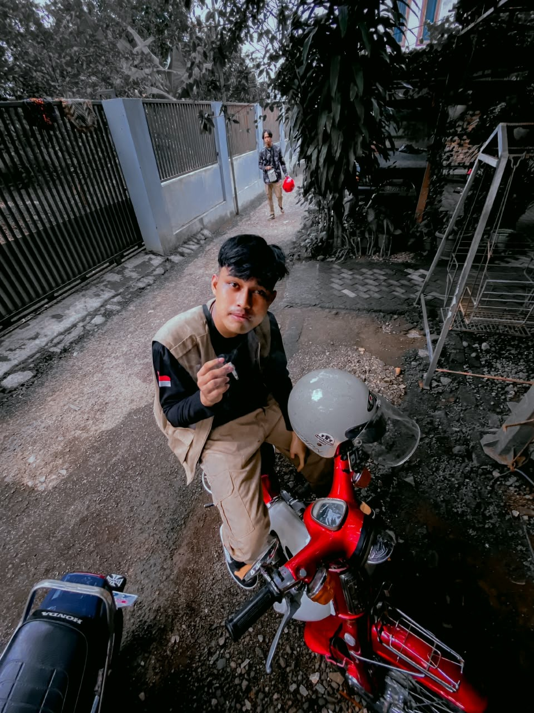

Nama saya : RIZA HUSEN ABDULLAH . Saya adalah mahasiswa Sistem Informasi Jurusan : TEKNIK.
Saya sedang mempelajari HTML, CSS, dan JavaScript.
Motto: "Jadilah cahaya seperti Ultraman, bahkan dalam kegelapan coding sekalipun - Ultraman Tiga"
Target saya adalah menjadi ultramen Web Developer - pahlawan yang membangun website, bukan menghancurkan kota.